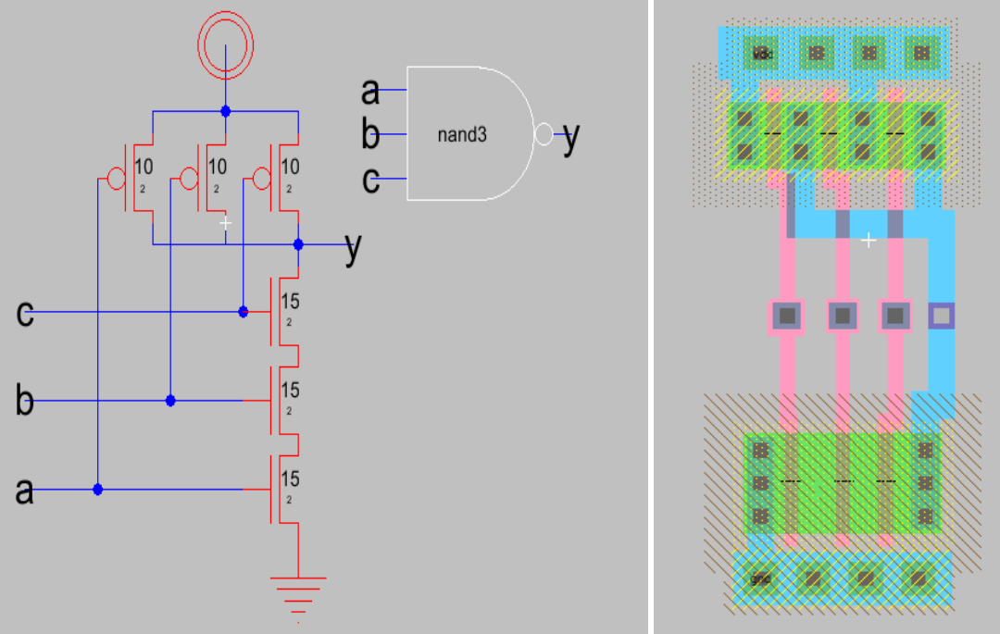
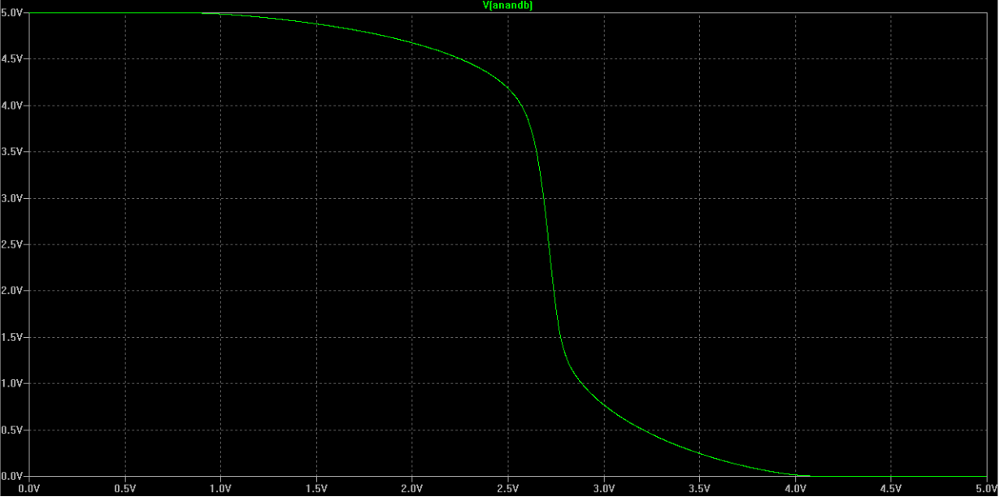
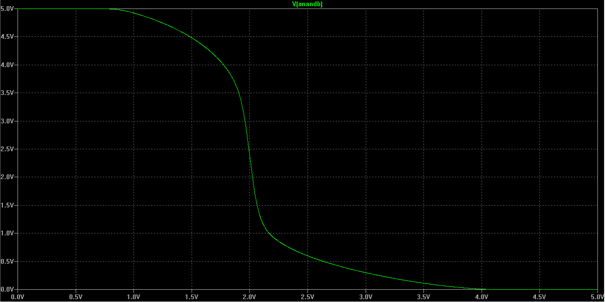
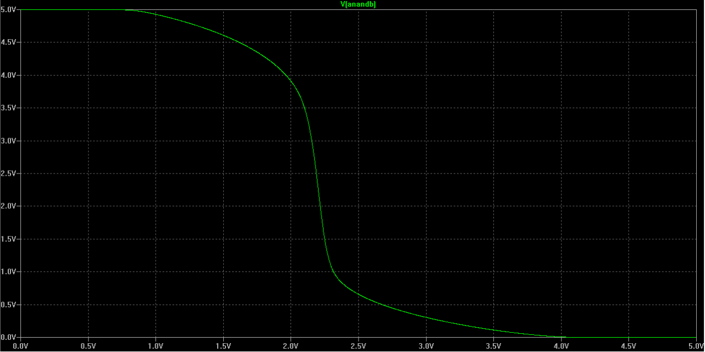
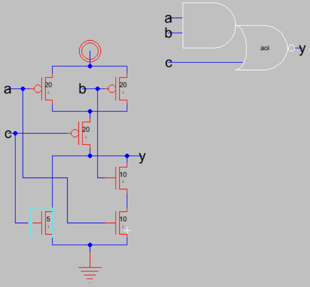
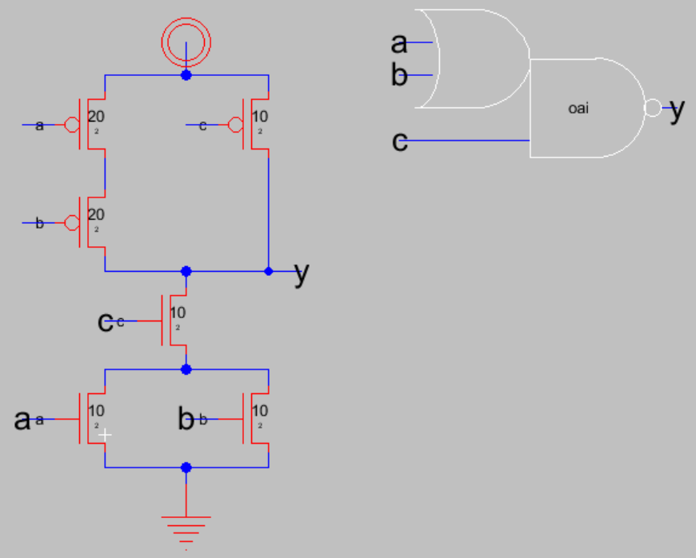

Laboratorio 2: Crear compuertas básicas¶
En este laboratorio se crearán distintas compuertas para formar una librería básica para los siguientes laboratorios
Contenidos del laboratorio
Objetivos¶
- Comparar por medio de simulaciones el tiempo de respuesta de distintas compuertas
- Comprender como afecta el “Fan-in” los tiempos de ascenso y caída de una compuerta
- Comprender como los transistores en serie afectan el diseño
Procedimiento¶
Creación y simulación: compuertas básicas¶
Nota
Todas las celdas que cree deberán tener las siguientes características: Vcc y Vss deberán correr de forma horizontal en la parte superior e inferior de la celda en metal 1, el espacio entre Vcc y Vss será de 80 λ de centro a centro. Los transistores NMOS ocuparan la parte inferior de la celda y los PMOS la parte superior; las entradas y salidas se conectaran por medio de contactos de metal 2, aparte de esto las ningún metal2 o 3 deberá ser utilizado dentro de las celdas
Crear compuertas Nand y Nor con las siguientes dimensiones que se indican en la tabla. Crear tanto la vista de layout como la de icono y esquemático
Tabla 1 Dimensiones de las compuertas Nand y Nor¶ Compuerta \(W_p\) \(W_n\) nand2 10𝞴 10𝞴 nand3 10𝞴 15𝞴 nor2 20𝞴 5𝞴 nor3 30𝞴 5𝞴 Recuerde exportar las entradas salidas y verificar que el diseño cumpla con las reglas de (DRC). Además de definir el modelo de Spice para los transistores para poder simular
Figura 53 Esquemático y Layout de la compuerta nand3
Para las compuertas nand2 y nor2 realice una simulación que muestre las 3 curvas VTC
La presencia de dos entradas independientes implica que másde una curva VTC necesita para describir el circuito
Para estas curvas se hace una transición en la salida de 1 a 0 para las distintas combinaciones de entrada
Tabla 2 Tabla de verdad de la compuerta nand2¶ A B Salida 0 0 1 0 1 1 1 0 1 1 1 0 Figura 54 Transición del valor lógico de entrada 00 a 11
Figura 55 Transición del valor lógico de entrada 01 a 11
Figura 56 Transición del valor lógico de entrada 10 a 11
Analice como varia \(V_M\) en las curvas dependiendo de la transición (Tanto para la compuerta nor2 como la nand2), analize además como afecta el dimensionamiento de los transistores estas curvas
Tabla 3 Vm para las distantas transiciones¶ Transición Vm (Volts) Entrada de 00 a 11 Entrada de 01 a 11 Entrada de 10 a 11 Para la transición de 00 a 11 ambas entradas cambian al mismo simultáneamente y la curva VCT para este caso está mucho más hacia la derecha que para las otras 2 curvas. Es instructivo calcular \(V_M\) para este caso (tanto para la compuerta nor2 como para la nand2)
Nota
Para facilitar este cálculo para la compuerta nand2 piense que los transistores NMOS en serie se pueden unir como en la figura que se muestra a continuación. Ahora bien, los transistores PMOS al estar en paralelo y conectados a entradas que cambian simultáneamente se pueden “combinar” como un solo transistor PMOS de ancho \(Wp\). Piense en como afectaría esto \(𝛽_n\) y \(𝛽_p\) para encontrar \(V_M\)
Compare la compuerta nand2 con nor2 en términos de dimensionamiento de transistores y sus curvas VCT
Para una fanout de 4 inversores (dimensiones 20_10) simule las compuertas nand2, nor2, nand3, nor3. Varié solo una de las entradas y mantenga constante las demás. Complete la siguiente tabla:
Tabla 4 Tiempos de asenso y caída con una carga de F04¶ Compuerta 𝑡𝑟 𝑡𝑓 nand2 nor2 nand3 nor3 Para una fanout de 16 inversores simule las compuertas nand2, nor2, nand3, nor3. Varié solo una de las entradas y mantenga constante las demás. Complete la siguiente tabla:
Tabla 5 Tiempos de asenso y caída con una carga de F04¶ Compuerta 𝑡𝑟 𝑡𝑓 nand2 nor2 nand3 nor3 Comparando los datos recolectados conteste como afecta el Fain-in y el Fan-Out el tiempo de asenso y caída de una compuerta.
Si tuviera una señal critica en cualentrada de la compuerta la colocaría y porque?
{kind=link}
{kind=link}
{kind=link}
{kind=link}
{kind=link}
Creación y simulación: compuertas AOI y OAI¶
Construya una compuerta AOI y otra OAI de dos entradas con las dimensiones que se muestran en las siguientes figuras, Recuerde crear tanto el layout, el esquemático y el icono para estarcompuertas
Figura 58 Esquemático de una compuerta AOI
Figura 59 Esquemático de una compuerta OAI
Realice una simulación donde cambie el valor de la salida, utilice un fan-out de 4 inversores (20_10) para estas dos compuertas que acaba de construir
Cuáles son las ventajas de construir esta compuerta de esta forma en lugar de utilizar varias compuertas?
{kind=link}
{kind=link}
Simulación de potencia¶
La potencia dinámica es el resultado de una transición en la salida, para modelar el numero de transiciones que tienen lugar en periodo T se introduce el factor de actividadque representa la probabilidad que una transición tome lugar durante un periodo. De esta forma la potencia dinámica se describemediante la siguiente formula:
\[P_{dyn} = 𝛼C{out}V_{DD}2𝑓\]Supóngase que a la salida de las compuertas se observa 1101101111111111 durante un periodo T. Calcule \(P_{dyn}\) para cada una de las compuertas. Considere además que la carga \(C_L\) son 4 inversores (20_10)